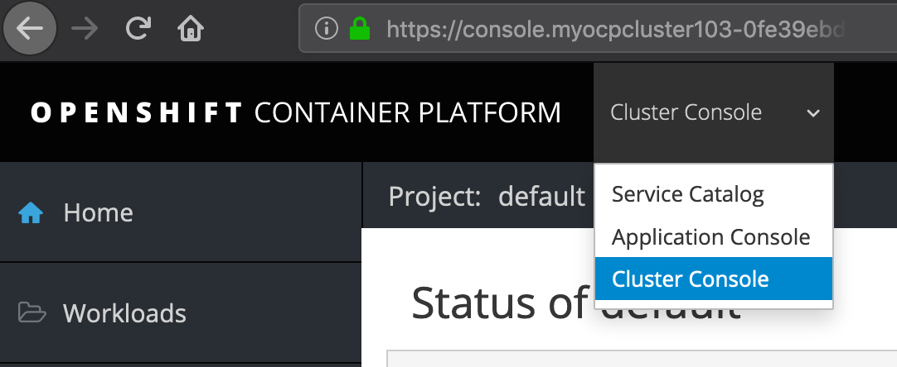
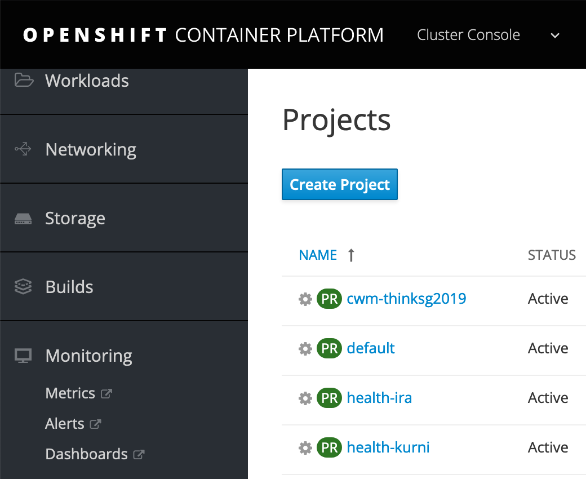
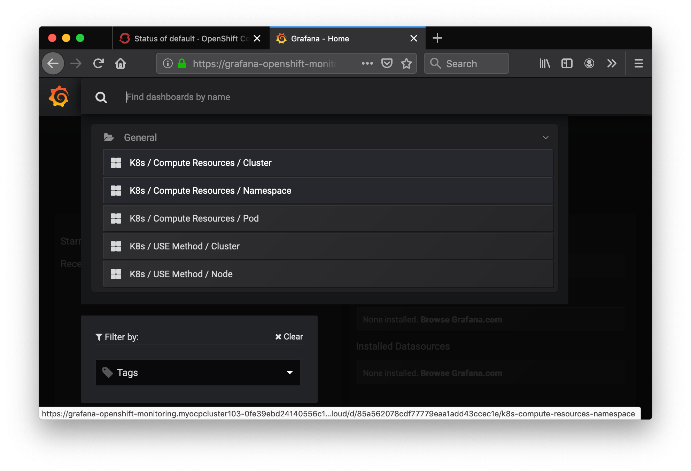
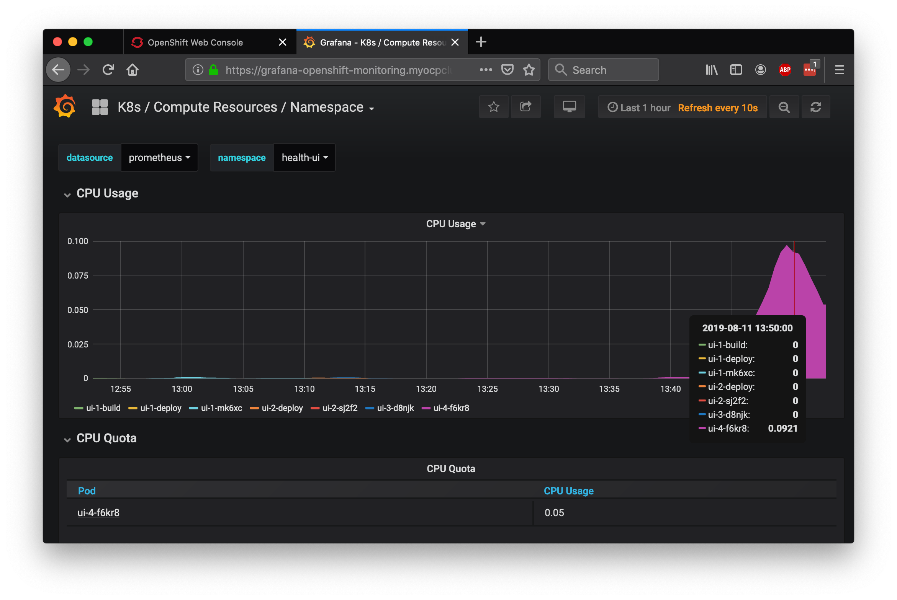
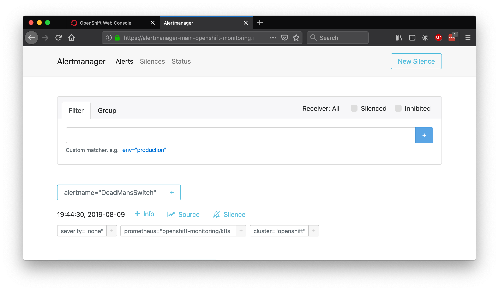

Exercise 3: Metrics and Dashboards
In this exercise, we'll explore the third-party monitoring and metrics dashboards that are installed for free with OpenShift!
Grafana
Red Hat OpenShift on IBM Cloud comes with Grafana preinstalled. Get started by switching to the Cluster Console view:

Then Navigate to Monitoring > Dashboards in the left-hand bar. You'll be asked to login with OpenShift and then click through some permissions.

You should then see your Grafana dashboard. Hit Home on the top left, and choose K8s / Compute Resources / Namespace.

Choose the name of the project you created in Step 1 - the same one that your application is running inside.
You should be able to see the CPU and Memory usage for your application. In production environments, this is helpful for identifying the average amount of CPU or Memory your application uses, especially as it can fluctuate through the day. We'll use this information in the next exercise to set up auto-scaling for our pods.

Promtheus and Alert Manager
Navigating back to the cluster console, you can also launch:
- Prometheus - a monitoring system with an efficient time series database
- Alertmanager - an extension of Prometheus focused on managing alerts
Prometheus

Alertmanager
